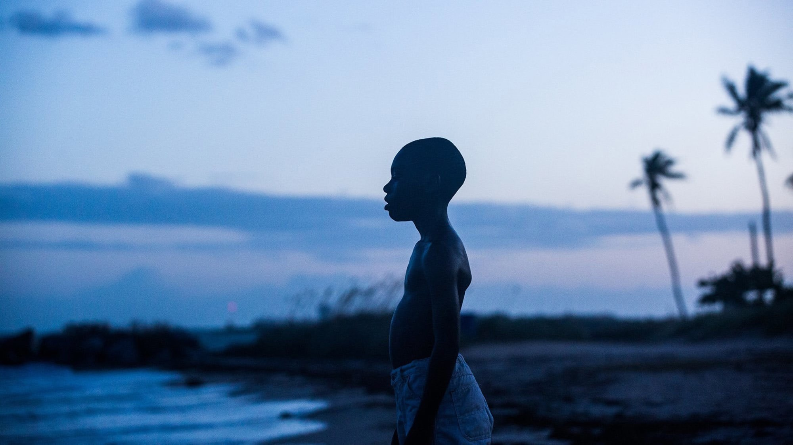
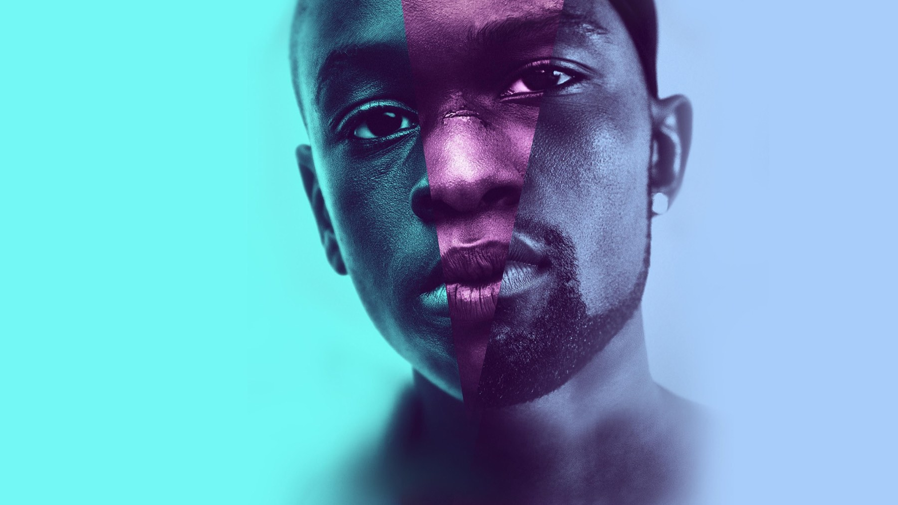
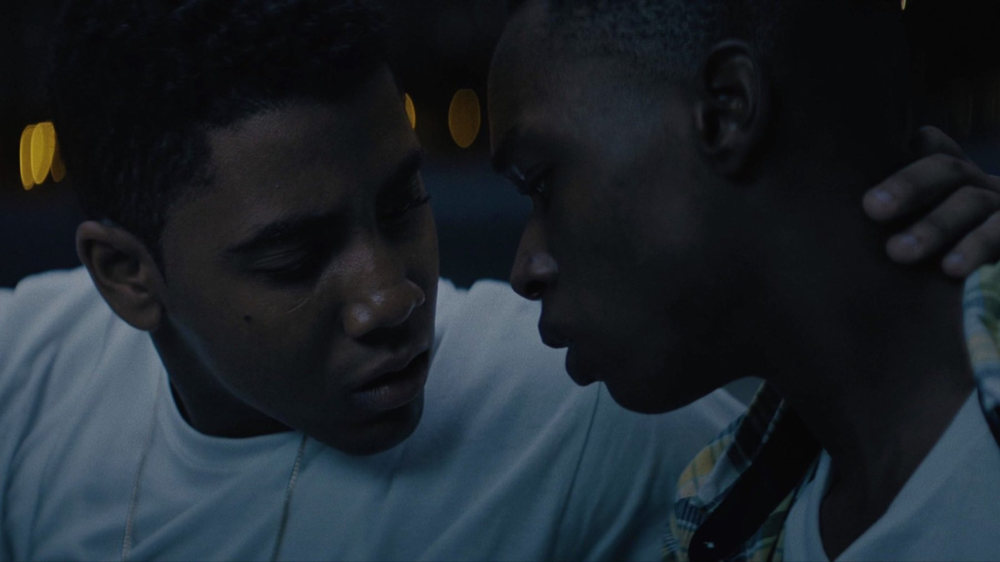

Moonlight compie 10 anni: 6 curiosità sul film
Tre attori che non si sono mai incontrati sul set, 25 giorni di riprese nel quartiere dove il regista è cresciuto e una busta sbagliata che ha reso la notte degli Oscar 2017 una leggenda
Il 21 ottobre 2016 arrivava nelle sale americane, in sole quattro, un titolo con un budget minuscolo, nessuna star in cima al cartellone e una storia raccontata in tre capitoli. Dieci anni dopo Moonlight resta tra le opere più discusse del decennio scorso, e non solo per quello che accadde la notte degli Oscar. Ecco sei cose sul suo dietro le quinte che aiutano a rivederlo, senza svelare nulla della trama.
Da quale opera nasce Moonlight?
Da una pièce che non è mai andata in scena. Il drammaturgo Tarell Alvin McCraney scrisse nel 2003 «In Moonlight Black Boys Look Blue», un testo semi-autobiografico nato per elaborare la morte della madre, legata all'AIDS. Barry Jenkins lo ricevette tramite il collettivo artistico Borscht di Miami e ne scrisse la prima stesura del film durante un mese a Bruxelles. Jenkins e McCraney erano cresciuti nello stesso quartiere, Liberty City, e questo spiega perché il film abbia la precisione di un ricordo più che di una ricostruzione. A finanziarlo e distribuirlo fu A24, per la quale era la prima produzione, mentre Plan B Entertainment, la società di Dede Gardner e Jeremy Kleiner, si unì ai produttori dopo aver visto la sceneggiatura al Telluride Film Festival del 2013.

Perché i tre Chiron non si sono mai incontrati?
Chiron, il protagonista, è interpretato da tre attori, uno per capitolo: Alex Hibbert da bambino, Ashton Sanders da adolescente e Trevante Rhodes da adulto. Jenkins decise di tenerli separati fino alla fine delle riprese, per evitare che si copiassero a vicenda: ognuno ha girato per conto suo, in un blocco di circa due settimane. Anche gli altri ruoli seguirono un calendario serratissimo. Naomie Harris completò tutte le sue scene in tre giorni, senza prove, e André Holland le sue in cinque, mentre Mahershala Ali faceva la spola con Miami nei fine settimana, tra un altro lavoro e l'altro. Il risultato, sullo schermo, è un personaggio che cambia corpo e voce ma resta la stessa persona: un effetto che una regia meno controllata avrebbe faticato a ottenere.
Perché girarlo a Miami senza incentivi?
Le riprese iniziarono il 14 ottobre 2015 e durarono 25 giorni, tutte a Liberty City. La Florida non offriva sgravi fiscali, mentre un altro Stato li avrebbe dati: il budget avrebbe potuto crescere fino al 30%. La produzione scelse comunque di restare nel quartiere dove Jenkins e McCraney erano cresciuti. È una decisione che si vede: i cortili, le scale e i campetti di Moonlight non sembrano scenografie, e gran parte dell'intimità nasce dalla rinuncia a un budget più comodo.
Come si è ottenuto quel colore?
Il direttore della fotografia James Laxton girò in digitale con cineprese Arri Alexa, in CinemaScope, un'inquadratura larga scelta per rendere meglio le tonalità della pelle. Poi i tre capitoli furono trattati con tre «look» diversi, che richiamano altrettante pellicole: Fuji per il primo, Agfa per il secondo e una Kodak modificata per il terzo. Anche la musica ha una trovata: Nicholas Britell applicò all'orchestra la tecnica «chopped and screwed» del hip-hop, cioè il rallentamento e la ripetizione dei suoni, ottenendo una colonna sonora fluida e dominata dai bassi. Se ripensi al film come a un'unica sfumatura azzurra, hai in mente soprattutto il primo capitolo: il resto cambia tono di continuo.

Cosa è successo davvero agli Oscar 2017?
Moonlight ottenne otto candidature agli Oscar e ne vinse tre: miglior film, miglior attore non protagonista a Mahershala Ali e miglior sceneggiatura non originale a Jenkins, con la storia di McCraney. La notte del 26 febbraio 2017 il premio principale fu però annunciato per errore. Warren Beatty e Faye Dunaway lessero «La La Land»: Beatty aveva ricevuto la busta di riserva della miglior attrice, quella con il nome di Emma Stone, e Dunaway pronunciò il titolo sbagliato. Passarono più di due minuti, con i produttori di La La Land già sul palco, prima che lo staff intervenisse. Fu Jordan Horowitz, produttore di La La Land, a prendere il microfono e a dire che il vincitore era Moonlight. Quella busta è oggi conservata all'Academy Museum di Los Angeles insieme al biglietto di congratulazioni di Beatty a Jenkins, e il regista ha letto nel 2018, al SXSW, il discorso che non poté fare quella sera.
Quali primati ha segnato il film?
Joi McMillon fu la prima donna nera candidata al miglior montaggio. Mahershala Ali è stato il primo attore musulmano a vincere un Oscar per un'interpretazione. Moonlight è inoltre il primo film con una storia LGBTQ a vincere come miglior film. Dopo la cerimonia il pubblico lo ha riscoperto: il weekend successivo, con 1.564 sale, ha incassato 2,5 milioni di dollari, più di quanto avessero fatto Spotlight e Birdman nel fine settimana dopo i loro Oscar. Ai Golden Globe aveva già vinto come miglior film drammatico. In Italia è passato prima alla Festa del Cinema di Roma, nell'ottobre 2016, ed è arrivato in sala nel febbraio 2017 con Lucky Red.
Vale la pena rivederlo oggi?
Sì, e forse più di allora. A dieci anni di distanza la sua forza sta nelle cose che non dice: i primi piani, le pause, i silenzi attorno a un tavolo di cucina, sui quali anche la critica italiana ha insistito. La recensione di Marianna Cappi su MYmovies lo legge come un racconto insieme «sociologico e introspettivo» di un ragazzino gay cresciuto in Florida, dentro un ambiente maschilista e violento. Lo consigliamo a chi cerca un dramma sull'identità che non ha fretta e a chi ricorda Moonlight solo per la busta sbagliata. Se ti è piaciuto il nostro pezzo su Il labirinto del fauno, che compie vent'anni a ottobre, ritroverai un cinema in cui l'immagine dice ciò che i personaggi non riescono a dire. Se invece cerchi un altro titolo per cui l'Academy ha dovuto attendere anni, rileggi la curiosità su The Departed. Per vederlo, a ottobre 2026 non risulta in nessun abbonamento in Italia nei dati TMDB: conviene guardare le piattaforme di noleggio.
Domande frequenti
Quando è uscito Moonlight in Italia?
Dopo l'anteprima alla Festa del Cinema di Roma nell'ottobre 2016, è uscito nelle sale italiane a febbraio 2017, distribuito da Lucky Red. Negli Stati Uniti era uscito il 21 ottobre 2016.
Quanti Oscar ha vinto Moonlight?
Tre, su otto candidature: miglior film, miglior attore non protagonista (Mahershala Ali) e miglior sceneggiatura non originale (Barry Jenkins, dalla storia di Tarell Alvin McCraney).
Moonlight è tratto da un libro?
No: nasce dalla pièce mai portata in scena «In Moonlight Black Boys Look Blue» di Tarell Alvin McCraney, scritta nel 2003.